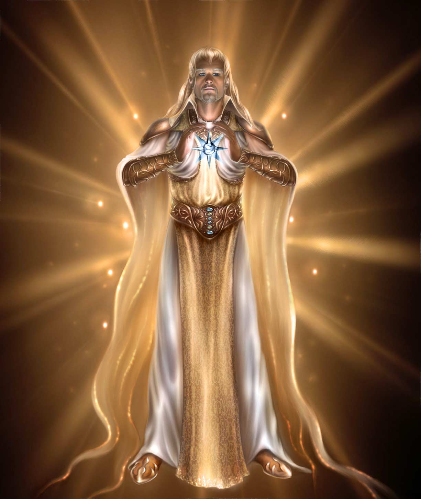
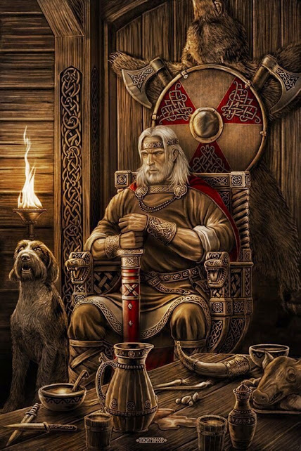
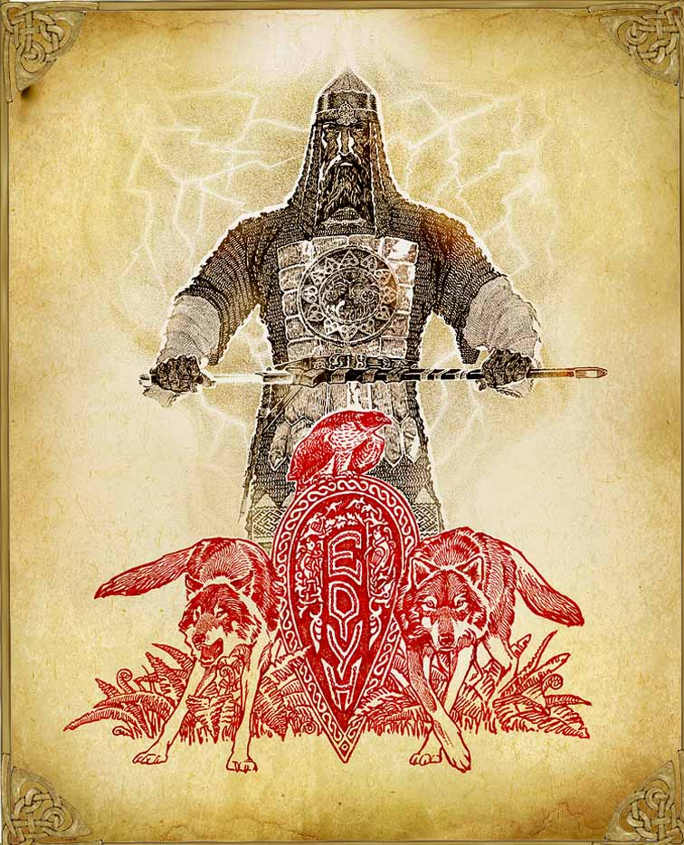
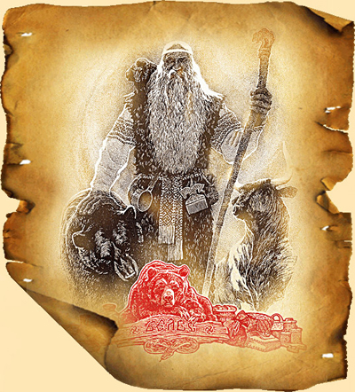
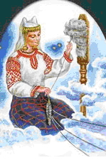
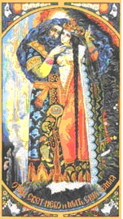
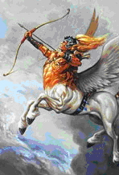
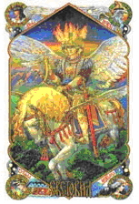

Славянский пантеон — не иерархия, а семья. Боги связаны родством, каждый отвечает за свою сферу мироздания. Старшие боги создали мир и установили законы. Младшие — управляют стихиями, временами года, человеческими делами. Духи и сущности населяют пространство между мирами.
✨ Вышние Боги
Боги, стоящие над всем мирозданием. Непознаваемые Сущности, из которых произошли все Светлые Боги и все живущие.
Ра-М-Ха — Вышняя Непознаваемая Сущность, излучающая Изначальный Жизньродящий Свет Радости и Первичный Огонь Мироздания (Жизньнесущую Инглию), из которого появились все ныне существующие и существовавшие Вселенные и всё живое в них. Куммиров и Образов, изображающих Рамху, никогда не существовало, ибо невозможно изобразить Непознаваемую Вышнюю Сущность.
Род-Породитель — неотъемлемая часть Единого Творца-Созидателя Великого Рамхи. Является Единым Богом-Покровителем всех Родов Расы Великой и потомков Рода Небесного. Бог-Покровитель Вселенных Мира Прави, Вышний Бог-Хранитель всех Живых и Разумных обитателей во всех Мирах.
Бог Инглъ — Вечный Бог-Хранитель Первичного Жизньродящего Огня Мироздания (Жизньнесущей Инглии) и Чистого Света Духовного Познания. Бог-Покровитель наших Многомудрых Первопредков и всех Православных Староверов-Инглингов. Он наполняет Божественным сиянием Священный Огонь в домашних Очагах и Капищах.
Бог Вышень — Бог-Покровитель нашей Вселенной в Светлых Мирах Нави, т.е. в Мирах Слави. Заботливый и могучий Отец Бога Сварога. Справедливый судья, разрешающий любые споры между Богами различных Миров или между людьми. Покровитель Чертога Финиста во Сварожьем Круге.
Бог Рамхат — Великий Бог справедливого Небесного суда и Вселенского Правопорядка. Небесный Судья, смотрящий за тем, чтобы не было нарушения кровных заповедей и Законов РИТА. Бог-Покровитель Чертога Небесного Вепря во Сварожьем Круге. Тех, кто нарушает Законы, низводит в касту неприкасаемых.
⚡ Старшие Боги
Верховные боги, создавшие мир и определившие его законы. Каждый из них — столп мироздания.

Вышний Бог Род — Един и Множествен одновременно. Когда мы говорим о всех Древних Богах и Великих Предках наших — мы говорим о Боге Роде. Бог-Покровитель Чертога Бусла (Аиста) во Сварожьем Круге. При рождении человека его будущая судьба записывается в Книгу Рода.

Сварог — Верховный Небесный Бог, управляющий течением Жизни и всем Мироустройством Вселенной в Явном Мире. Великий Отец множества Светлых Богов и Богинь — Сварожичей. Хранитель и Покровитель Небесного Вырия, посаженного вокруг Небесного Асгарда. Постоянный Хранитель Небесного Чертога Медведя во Сварожьем Круге.

Бог-Покровитель всех воинов и многих Родов из Расы Великой. Перун уже трижды прибывал на Мидгард-Землю, чтобы защитить её от тёмных сил Пекельного Мира. Во время Третьего посещения, около 40 000 лет назад, Перун поведал Священную Мудрость о грядущем, записанную х'Арийскими Рунами — Саньтии Веды Перуна.

Велес — самый сложный и многогранный бог пантеона. Он одновременно хозяин Нави (мира мёртвых), бог скота и богатства, покровитель торговцев, магов и музыкантов. Велес хранит мудрость предков и ведёт души умерших по Калинову мосту. Его священные животные — медведь и змей. Он противник Перуна, но не враг — это две стороны одного мира.

Макошь — единственная богиня в пантеоне князя Владимира. Она прядёт нити судеб всех живущих вместе с помощницами Долей и Недолей. Макошь — Мать Сыра Земля, покровительница женщин, рукодельниц и целительниц. Её день — пятница (в этот день нельзя прясть). Макошь знает прошлое, настоящее и будущее каждого человека.

Лада-Матушка (Матерь Сва) — Великая Небесная Мать, Богородица. Любящая и нежная Мать большинства Светлых Богов Расы Великой, Богородица-Покровительница всех Народов Великой Рассении. Богиня Красоты и Любви, оберегающая Семейные Союзы Родов. Дарует молодым супругам домашний уют, дружелюбие, взаимопонимание и многодетство.

Богиня Тара (Тарина, Тая, Табити) — младшая сестра Бога Тарха-Даждьбога, дочь Небесного Бога Перуна. Вечнопрекрасная Богиня Тара является Небесной Хранительницей Священных Рощ, Лесов, Дубрав и Священных Деревьев Великой Расы — Дуба, Кедра, Вяза, Берёзы и Ясеня. Всегда искрится добротой, любовью и нежностью.
☀️ Младшие Боги
Боги стихий, сезонов, ремёсел и человеческих дел. Каждый управляет своей сферой мироздания.

Сын Сварога, податель жизни и света. Русичи называли себя «Даждьбожьи внуки». Даёт тепло, урожай, изобилие.
Повелитель всех ветров — от лёгкого бриза до бури. Его внуки — ветры четырёх сторон. Покровитель моряков и путников.
Если Даждьбог — свет и тепло, то Хорс — само солнце как небесное тело. Он ведёт солнечную колесницу по небу каждый день.
Вышний Бог, хранитель Вечно живого Огня. Принимает Огненные Дары и безкровные Жертвоприношения. Покровитель Чертога Небесного Змея во Сварожьем Круге. Призывают при лечении заболевших.
Мать богов, богиня весны, любви и красоты. Покровительница брака и семейного лада. Её призывали на свадьбах.
Дочь Лады, олицетворение юной весны и первой любви. Покровительница девушек и незамужних. Символ — лебедь.
Олицетворение жизненной силы, весеннего пробуждения. Жива вдыхает жизнь во всё, что растёт и дышит.
Богиня зимы, холода и перерождения. Не злая — она хранит покой мёртвых. На Масленицу сжигают её чучело, провожая зиму.
Молодой, яростный бог плодородия и страсти. Ярило пробуждает землю весной. Его сила — в юности и неукротимой энергии.
Бог, дающий возможность сотворить Омовения и Обряды Очищения Телес, Души и Духа. Покровитель Чертога Коня во Сварожьем Круге. Перед жатвой праздновали День Купала.
Бог осеннего солнца и урожая. Авсень мостит дорогу для Коляды, готовит мир к зиме. Покровитель мудрых решений.
Вышний Бог, управляющий Великими Переменами. Даровал многим Родам Календарь (Коляды Дар). Покровитель ратных людей и Жрецов. Праздник — день зимнего Солнцестояния.
Хранитель хода времени, повелитель чисел и ритмов. Следит за сменой дня и ночи, сезонов и эпох.
Помощница Макоши, прядёт нити счастливой судьбы. Кому Доля улыбнётся — тому удача во всём.
Вторая помощница Макоши, прядёт нити бед. Не злая — она часть равновесия. Без Недоли не было бы цены у удачи.
Сестра Карны. Желя — плач по умершим, горе, которое очищает душу. Её присутствие на похоронах помогает отпустить.
Богиня кармы и перерождения. Карна определяет, кем душа родится в следующей жизни. Плачет над телами павших воинов.
Дочь Перуна, богиня лесов и охоты. Аналог Артемиды. Независимая, дикая, свободная. Покровительница охотников.
Бог морских путешествий и подводного мира. Ему молились перед морским походом, бросали монеты в волны.
Объединяет три мира — Правь, Явь, Навь. Тройственная природа мироздания. Покровитель тех, кто ищет целостность.
Бог гостеприимства, пиров и священного огня. Его храм стоял в Ретре — главном городе лютичей. Радогост принимает каждого.
Бог медоварения и священного напитка сурьи. Научил людей готовить медовуху. Покровитель праздников и веселья.
Богиня танца, музыки и вдохновения. Покровительница скоморохов и музыкантов. Через танец соединяет людей с богами.
Вместе с Сумерлой правит подземным миром. Хранит клады и корни Мирового Древа. Ему оставляли подношения у корней деревьев.
Является в полдень на полях. Задаёт загадки жнецам — кто не ответит, того закружит до безумия. Полуденный зной — её дыхание.
Белорусский бог зимнего холода. Ходит босой по снегу, стучит посохом — от стука трескается лёд. Прообраз Деда Мороза.
Небесный Бог-Покровитель Древней Мудрости. Управляет совершением Обрядов и Ритуалов. Бог-Покровитель Чертога Тура во Сварожьем Круге. В тяжёлые времена — Бог-Воитель.
🐦 Духи и Сущности
Существа, населяющие пространство между мирами — вещие птицы, духи-хранители, посланники богов.
Дух предка, охраняющий границы и собственность рода. «Чур меня!» — призвание его защиты. Деревянные столбы-чуры ставили у границ.
Женский дух-защитница, оберегающая людей, скот и посевы. Живёт у воды. Души добрых женщин, продолжающих защищать живых.
Птица из славянского рая. Одно перо освещает комнату. Поймать — получить исполнение желания. Символ высшего стремления.
Гигантская птица, несущая мудрость из Ирия. Сидит на вершине Мирового Древа и видит всё, что происходит в трёх мирах.
Райская птица с женским лицом. Её песня приносит забвение и блаженство. Кто услышит — забывает все печали. Живёт в Ирии.
Вещая птица, знающая всё о прошлом, настоящем и будущем. Песни Гамаюн — основа славянской космогонии. Посланница богов.
Хочешь узнать, какой бог покровительствует тебе?